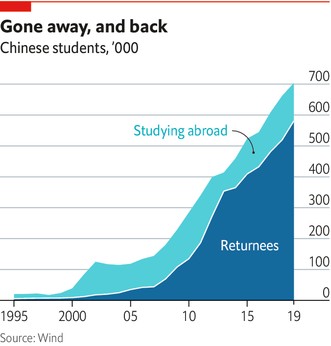

2021-01-31T13:49:09+00:00
Views of the world
世界观
世界觀
A bale of sea turtles
一群海龟
一群海龜
As attitudes to the West sour, students turn home
随着对西方的看法变糟，学生们回家了【专题报道《中国青年》系列】
隨着對西方的看法變糟，學生們回家了【專題報道《中國青年》系列】
BAI SHUANG stayed overseas longer than most. After a degree in Paris, Ms Bai worked for a French company, then went to London for a Master’s and got another job. By 2017 two forces pulled her home. First was her salary, which Ms Bai thought too low; she heard she could earn more in Shanghai’s startup scene. The second was her parents, who were aghast at the terrorist attacks that rocked both her adoptive cities. China was safe, they said, and Ms Bai could “shine” here. “If there is a place where you can have it all, then why not?” Ms Bai reasoned. She bought a ticket home.
白双在海外的时间比大多数人都长。在巴黎获得学位后，她在一家法国公司工作，然后去了伦敦攻读硕士学位，又找了一份工作。到了2017年，两股力量将她带回了家。首先是工资，她觉得太低了。她听说可以在上海的创业圈子里赚到更多。其次是父母，他们听说这两个接纳她的城市遭受了恐怖袭击后吓坏了。他们说，中国很安全，她可以在这里“发光发亮”。“如果有一个地方可以解决一切问题，那为什么不去呢？” 白双这样想到。她买票回了国。
白雙在海外的時間比大多數人都長。在巴黎獲得學位後，她在一家法國公司工作，然後去了倫敦攻讀碩士學位，又找了一份工作。到了2017年，兩股力量將她帶回了家。首先是工資，她覺得太低了。她聽說可以在上海的創業圈子裡賺到更多。其次是父母，他們聽說這兩個接納她的城市遭受了恐怖襲擊後嚇壞了。他們說，中國很安全，她可以在這裡“發光發亮”。“如果有一個地方可以解決一切問題，那為什麼不去呢？” 白雙這樣想到。她買票回了國。
Ms Bai is a “sea turtle”, a play on the Chinese homonym haigui, meaning “to return from abroad”. Of the 6.2m Chinese who left to study overseas between 2000 and 2019, more than 4m have returned, says the education ministry. The rate of return has picked up. In 2001 just 14% went home. But in every year since 2013, China has welcomed back at least four in five overseas graduates. Amid the unusual stresses of covid-19, it is thought that 800,000 came home in the first nine months of 2020, up from 580,000 in 2019.
白双是个“海龟”，这个称呼在中文里和“海归”谐音，意为“从海外归来”。教育部说，在2000年至2019年之间有620万中国人留学海外，其中有400多万已返回。回国率已经提高：2001年只有14%回国，但自2013年以来，中国每年都会迎接至少五分之四的海外毕业生回国。在新冠疫情不同寻常的压力下，据信2020年前九个月有80万人回国，而2019年为58万人。
白雙是個“海龜”，這個稱呼在中文裡和“海歸”諧音，意為“從海外歸來”。教育部說，在2000年至2019年之間有620萬中國人留學海外，其中有400多萬已返回。回國率已經提高：2001年只有14%回國，但自2013年以來，中國每年都會迎接至少五分之四的海外畢業生回國。在新冠疫情不同尋常的壓力下，據信2020年前九個月有80萬人回國，而2019年為58萬人。
The pandemic has cut short stints abroad. When it is over, educational flows should pick up again. But a new confluence of factors had already been turning well-educated Chinese away from the West, and America in particular. More than just covid-19 and terrorist incidents are making the West seem unsafe and hostile. Trips to America by Chinese students fell by 70% in the first nine months of 2020 over a year earlier. But only 50% fewer Taiwanese and 56% fewer South Korean students went to America, despite the fact that both places beat back covid-19 as effectively as China.
疫情缩短了在国外逗留的时间。疫情结束后，留学人数应该会再次增加。但是，一股新的各种因素的合流已使受过良好教育的中国人远离西方，尤其是美国。使西方看起来不安全且不友好的不仅仅是新冠疫情和恐怖袭击。2020年前九个月，中国大陆学生前往美国的旅行同比下降了70%。但是，去往美国的台湾学生和韩国学生分别仅下降50%和56%，尽管这两个地方抗疫和中国大陆一样高效。
疫情縮短了在國外逗留的時間。疫情結束後，留學人數應該會再次增加。但是，一股新的各種因素的合流已使受過良好教育的中國人遠離西方，尤其是美國。使西方看起來不安全且不友好的不僅僅是新冠疫情和恐怖襲擊。2020年前九個月，中國大陸學生前往美國的旅行同比下降了70%。但是，去往美國的台灣學生和韓國學生分別僅下降50%和56%，儘管這兩個地方抗疫和中國大陸一樣高效。
One reason is that America is making it harder for Chinese graduates to stay. In 2018 it cut from five years to one the validity of visas issued to those in sensitive fields of study, including computer science. In September America revoked visas of 1,000 students and researchers whom it deemed security threats. Donald Trump repeatedly accused Chinese students of stealing American technology. In the words of Christopher Wray, his FBI director, China is no longer just a “whole-of-government” threat, but a “whole-of-society” one.
原因之一是美国的政策使得中国的毕业生更难留下来。2018年，发放给包括计算机科学在内的敏感研究领域人员的签证有效期从五年缩短至一年。当年9月，美国撤销了1000名它认为构成了安全威胁的学生和研究人员的签证。特朗普曾多次指责中国学生窃取美国技术。用他的联邦调查局局长克里斯托弗·雷（Christopher Wray）的话来说，中国不再只是对“整个政府”的威胁，而是对“整个社会”的威胁。
原因之一是美國的政策使得中國的畢業生更難留下來。2018年，發放給包括計算機科學在內的敏感研究領域人員的簽證有效期從五年縮短至一年。當年9月，美國撤銷了1000名它認為構成了安全威脅的學生和研究人員的簽證。特朗普曾多次指責中國學生竊取美國技術。用他的聯邦調查局局長克里斯托弗·雷（Christopher Wray）的話來說，中國不再只是對“整個政府”的威脅，而是對“整個社會”的威脅。
It is little surprise that young Chinese wonder if they are welcome. Last year over half of American youths polled by the Pew Research Centre expressed negative views of China. Across the population this number hit an all-time high of 73%. The feeling seems mutual. In a survey of 20,000 Chinese run by Cary Wu of Toronto University last April, four in five respondents under 30 said that they did not trust Americans.
毫不意外，中国青年开始怀疑自己是否受欢迎。去年，皮尤研究中心调查的美国青年中，有一半以上对中国持负面看法。在整个人口中，这一数字创下了73%的历史新高。这种感觉似乎是相互的。多伦多的约克大学的吴志明于去年4月对两万名中国人的调查显示，五分之四的30岁以下受访者说自己不信任美国人。
毫不意外，中國青年開始懷疑自己是否受歡迎。去年，皮尤研究中心調查的美國青年中，有一半以上對中國持負面看法。在整個人口中，這一數字創下了73%的歷史新高。這種感覺似乎是相互的。多倫多的約克大學的吳志明於去年4月對兩萬名中國人的調查顯示，五分之四的30歲以下受訪者說自己不信任美國人。

The experiences of covid-19 and Mr Trump have formed views in young Chinese that will linger long after both are gone. Mr Trump threatened to ban Huawei, a national champion; TikTok, a winning export; and WeChat, a lifeline to family back home for those overseas. A popular joke online is that Mr Trump encouraged the Chinese to rally round the flag. In nationalistic circles he was even praised for laying bare America’s hypocrisy on espousing liberal values and openness.
中国青年在新冠疫情和特朗普任期中形成的一些看法将在这二者消失之后长久遗留下来。特朗普威胁封杀中国的领军企业华为、成功的出口产品TikTok以及海外华人与家人联系的生命线微信。网上一个流行的笑话是特朗普让中国人更团结一致了。在民族主义的圈子里，人们甚至赞扬他揭露了美国在拥护自由价值观和开放性上的虚伪。
中國青年在新冠疫情和特朗普任期中形成的一些看法將在這二者消失之後長久遺留下來。特朗普威脅封殺中國的領軍企業華為、成功的出口產品TikTok以及海外華人與家人聯繫的生命線微信。網上一個流行的笑話是特朗普讓中國人更團結一致了。在民族主義的圈子裡，人們甚至讚揚他揭露了美國在擁護自由價值觀和開放性上的虛偽。
Hate crimes against Asian-Americans in America have risen. Anti-Chinese sentiment can persuade Chinese overseas students—cosmopolitan, politically liberal types—to stick up for China. A study by Jennifer Pan and Yiqing Xu of Stanford University conducted in elite American universities found that students who encountered racist taunts were more likely to back China’s political system. Those who had previously been least nationalistic showed the biggest rise in support for Chinese authoritarianism.
在美国，针对亚裔美国人的仇恨犯罪有所增加。反华情绪可以说服中国留学生——见过世面的、政治自由派的那些——为中国辩护。斯坦福大学的潘婕和徐轶青在美国精英大学进行的一项研究发现，遭受过种族主义嘲弄的学生更有可能支持中国的政治体系，而之前民族主义程度最低的学生对中国威权主义的支持上升最为显著。
在美國，針對亞裔美國人的仇恨犯罪有所增加。反華情緒可以說服中國留學生——見過世面的、政治自由派的那些——為中國辯護。斯坦福大學的潘婕和徐軼青在美國精英大學進行的一項研究發現，遭受過種族主義嘲弄的學生更有可能支持中國的政治體系，而之前民族主義程度最低的學生對中國威權主義的支持上升最為顯著。
At home and overseas, young Chinese were appalled by how Western democracies botched their response to covid-19, when tough measures in China stopped it in its tracks. A survey last year by researchers at the University of California, San Diego, found that university-educated Chinese youths displayed the largest jump in support for Xi Jinping’s regime. In a post-covid world its competence, public order and efficiency look attractive. This has been manna for propagandists, who have censored news of the early cover-up and suffering in Wuhan, where the virus was first found. One of those who wrote bravely about these themes was Fang Fang, a 65-year-old novelist. Millions rushed to read her online diary before censors took it down. Then news broke that her account was to be translated and published in America. The fiercest backlash came among young, keen readers of her work. After state media attacked Fang Fang, many felt she had “turned her pen into a knife, and handed it to the West”.
在中国采取强硬措施遏制了疫情蔓延时，西方民主国家应对疫情的拙劣表现让国内外的中国青年都感到震惊。去年，加州大学圣地亚哥分校的研究人员进行的一项调查发现，受过大学教育的中国青年对习近平政权的支持表现出了最大的飞跃。在疫情后的世界里，其能力、公共秩序和效率看起来很有吸引力。这对于政治宣传者来说可谓天赐福音，而这些人打压了有关最早发现病毒的武汉在早期隐瞒疫情和经受苦难的新闻。65岁的小说家方方就是其中一个勇敢地书写这些主题的人。在审查将其屏蔽之前，数百万人蜂拥追读她的在线日记。然后有消息传出她的记叙将在美国翻译出版。最强烈的反弹来自于她的那些年轻热情的读者。在官方媒体攻讦方方之后，许多人都觉得她是“给西方递刀子”。
在中國採取強硬措施遏制了疫情蔓延時，西方民主國家應對疫情的拙劣表現讓國內外的中國青年都感到震驚。去年，加州大學聖地亞哥分校的研究人員進行的一項調查發現，受過大學教育的中國青年對習近平政權的支持表現出了最大的飛躍。在疫情後的世界裡，其能力、公共秩序和效率看起來很有吸引力。這對於政治宣傳者來說可謂天賜福音，而這些人打壓了有關最早發現病毒的武漢在早期隱瞞疫情和經受苦難的新聞。65歲的小說家方方就是其中一個勇敢地書寫這些主題的人。在審查將其屏蔽之前，數百萬人蜂擁追讀她的在線日記。然後有消息傳出她的記敘將在美國翻譯出版。最強烈的反彈來自於她的那些年輕熱情的讀者。在官方媒體攻訐方方之後，許多人都覺得她是“給西方遞刀子”。
The young pit the starry-eyed admiration of Fang Fang’s generation for the West against their own clear-eyed confidence. They think China is best served by picking aspects of Western culture that suit it. “Lots of young people think that America is declining, and that its flaws could be solved with a Chinese political arrangement,” notes Feng Chucheng of Plenum, a think-tank in Beijing. “They are more confident that we do not have to follow the same path—in fact, that our path might be better.”
年轻人拿方方这一代人对西方天真的向往与自己清醒的信心一较高下。他们认为，选择西方文化中适合自己的那部分对中国最好。“很多年轻人认为美国正在衰退，其缺陷可以通过中国式的政治安排来解决，”北京智囊团Plenum的冯楚成指出，“他们更有信心我们不必遵循同一条道路——实际上，他们认为我们的道路可能会更好。”
年輕人拿方方這一代人對西方天真的嚮往與自己清醒的信心一較高下。他們認為，選擇西方文化中適合自己的那部分對中國最好。“很多年輕人認為美國正在衰退，其缺陷可以通過中國式的政治安排來解決，”北京智囊團Plenum的馮楚成指出，“他們更有信心我們不必遵循同一條道路——實際上，他們認為我們的道路可能會更好。”
The thinking was that students abroad might embrace Western values. Now it often goes the other way. A saying popular with Chinese students overseas is: “Pretty mountains, pretty lakes, pretty boring”, expressing their longing for China’s efficient, clean and fast-paced cities. When Dylan Zhou arrived in San Francisco for a PhD in physics in 2017, he thought America was “really fantastic, really liberal”. With time, Mr Zhou liked it less: its courts were too lenient, its policies for minorities too indulgent, and American investors would crack jokes he did not understand. Mr Zhou is returning to China early, to set up a fintech company.
过去人们以为留学生可能会拥抱西方的价值观。现在往往是反过来。海外的中国学生中流行一句话：“好山好水好无聊”，说出了他们对中国高效、清洁和快节奏城市的渴望。当迪伦·周（Dylan Zhou，音译）2017年抵达旧金山攻读物理学博士时，他认为美国“真的很棒，真的很自由”。随着时间的流逝，他不那么喜欢它了：法院太宽容了；对少数族裔的政策太放纵了；美国投资者会开他听不懂的玩笑。他早早返回了中国，要成立一家金融科技公司。
過去人們以為留學生可能會擁抱西方的價值觀。現在往往是反過來。海外的中國學生中流行一句話：“好山好水好無聊”，說出了他們對中國高效、清潔和快節奏城市的渴望。當迪倫·周（Dylan Zhou，音譯）2017年抵達舊金山攻讀物理學博士時，他認為美國“真的很棒，真的很自由”。隨着時間的流逝，他不那麼喜歡它了：法院太寬容了；對少數族裔的政策太放縱了；美國投資者會開他聽不懂的玩笑。他早早返回了中國，要成立一家金融科技公司。
Like Mr Zhou and Ms Bai, who runs an online-learning startup, many are lured by China’s zingy tech sector. Earlier returnees are credited with getting it off the ground, building local versions of Facebook and Twitter. Now Facebook and the rest steal ideas from pioneering Chinese apps, a source of pride for young Chinese. Financing from venture-capital funds is easier to come by. And if returnees have influential parents, their guanxi, or personal connections, can give children a head start.
就像周先生和经营在线学习创业公司的白双一样，许多人被中国充满活力的科技行业吸引。早年的海归被视为让这个行业起步的功臣，搭建出了本地版本的Facebook和推特。现在，Facebook和其他公司则从中国青年引以为傲的开创性中国应用中偷点子。风投的资金也更容易拿到。而如果海归的父母很有影响力，他们的“关系”可以让孩子先人一步 。
就像周先生和經營在線學習創業公司的白雙一樣，許多人被中國充滿活力的科技行業吸引。早年的海歸被視為讓這個行業起步的功臣，搭建出了本地版本的Facebook和推特。現在，Facebook和其他公司則從中國青年引以為傲的開創性中國應用中偷點子。風投的資金也更容易拿到。而如果海歸的父母很有影響力，他們的“關係”可以讓孩子先人一步 。
Feeling territorial
地域感
地域感
A lack of sympathy for liberal values is becoming evident closer to home. Many of the grievances that drive Hong Kongers to protest, such as graduate unemployment and high house prices, once resonated with mainlanders. Luqiu Luwei, a journalism professor at Hong Kong Baptist University, says her mainland students were “full of curiosity” during the mass sit-ins of the “umbrella movement” in 2014, rushing to observe and even join them. But the protests that roiled Hong Kong in 2019 left them cold. “Why are they allowed to be so disruptive?” her students asked. Police on the mainland called some students’ parents to warn their children to stay clear of the protests. But Ms Luqiu also observes that few seek out news from sources other than Chinese media, which have vilified the protesters as separatists. This is despite the fact that Hong Kong’s internet is open, so they do not need to use unauthorised virtual private networks to access foreign news sites, unlike on the mainland. Powerful domestic platforms such as Weibo, WeChat and Douyin mean few form the habit to read widely, thinks Ms Luqiu.
在离家更近的地方，对自由主义价值观缺乏认同这一点正在清晰显现。许多引发香港人抗议的不满情绪，例如毕业生失业率和高房价，曾经引起大陆人的共鸣。香港浸会大学新闻学教授闾丘露薇表示，她的大陆学生2014年时对“雨伞运动”的大规模静坐示威“充满了好奇心”，急于观察甚至加入。但对2019年令香港陷入动荡的抗议活动冷眼旁观。“为什么他们可以这样搞破坏？” 她的学生们问。大陆警方呼吁一些学生的父母警告自己的孩子远离抗议活动。但闾丘露薇还观察到，尽管香港的互联网是开放的，不像在大陆需要使用VPN才能访问外国新闻站点，但这些学生很少会去大陆媒体之外的地方找新闻看，而这些媒体把抗议者污蔑为港独分子。闾丘露薇认为，微博、微信和抖音等强大的国内平台意味着很少有人养成广泛阅读的习惯。
在離家更近的地方，對自由主義價值觀缺乏認同這一點正在清晰顯現。許多引發香港人抗議的不滿情緒，例如畢業生失業率和高房價，曾經引起大陸人的共鳴。香港浸會大學新聞學教授閭丘露薇表示，她的大陸學生2014年時對“雨傘運動”的大規模靜坐示威“充滿了好奇心”，急於觀察甚至加入。但對2019年令香港陷入動蕩的抗議活動冷眼旁觀。“為什麼他們可以這樣搞破壞？” 她的學生們問。大陸警方呼籲一些學生的父母警告自己的孩子遠離抗議活動。但閭丘露薇還觀察到，儘管香港的互聯網是開放的，不像在大陸需要使用VPN才能訪問外國新聞站點，但這些學生很少會去大陸媒體之外的地方找新聞看，而這些媒體把抗議者污衊為港獨分子。閭丘露薇認為，微博、微信和抖音等強大的國內平台意味着很少有人養成廣泛閱讀的習慣。
And what of young views of Taiwan, which China claims as its own? In 2011 China allowed students to study in Taiwan at a time of warmer ties with a China-friendly government. Thousands have thus been able to see democracy up-close in a place with a familiar language and culture. A few, like 27-year-old Anderson Yu, who arrived in 2011 from southern Guangdong province, relish the experience. “I love this place,” says Mr Yu, who hears out pro-independence Taiwanese friends even if he is “sceptical”. Lots of other young Chinese flock to the island for trinkets and pop culture.
那么，年轻人对于中国说属于自己的台湾又有何看法呢？在与亲大陆的台湾当局关系热络的2011年，中国允许学生去台湾学习。成千上万的人由此能够在有熟悉的语言和文化的地方近距离看到民主。一些人很珍惜这段经历，比如27岁的安德森·于（Anderson Yu，音译），他2011年从广东省南部来到台湾。“我很喜欢这里。”他说。即使他“持怀疑态度”，他也愿意倾听支持独立的台湾朋友的声音。中国许多年轻人涌向台湾岛，购买小物件并体验流行文化。
那麼，年輕人對於中國說屬於自己的台灣又有何看法呢？在與親大陸的台灣當局關係熱絡的2011年，中國允許學生去台灣學習。成千上萬的人由此能夠在有熟悉的語言和文化的地方近距離看到民主。一些人很珍惜這段經歷，比如27歲的安德森·於（Anderson Yu，音譯），他2011年從廣東省南部來到台灣。“我很喜歡這裡。”他說。即使他“持懷疑態度”，他也願意傾聽支持獨立的台灣朋友的聲音。中國許多年輕人湧向台灣島，購買小物件並體驗流行文化。
But many experience discrimination from locals and barriers that stop them from applying for grants or staying on to work. Taiwanese youths mistrust China more than their elders do. Chinese students also make no effort to mix, says Mr Yu. Attitudes have hardened since Tsai Ing-wen was elected president in 2016 (and re-elected in 2020). Many are “upset that Taiwan is not grateful to China for the freedoms it has granted the region,” says Mr Yu.
但是，许多人遭到当地人的歧视，还有令他们无法申请款项或留下来工作的障碍。台湾的年轻人比他们的长辈更不信任中国。于先生说，中国学生也没有做出任何融入的努力。自从蔡英文在2016年当选台湾地区领导人（并于2020年连任）后，各方态度变得强硬。于先生说，许多人“因为台湾并不感激中国给予该地区的自由而感到愤愤不平”。
但是，許多人遭到當地人的歧視，還有令他們無法申請款項或留下來工作的障礙。台灣的年輕人比他們的長輩更不信任中國。於先生說，中國學生也沒有做出任何融入的努力。自從蔡英文在2016年當選台灣地區領導人（並於2020年連任）後，各方態度變得強硬。於先生說，許多人“因為台灣並不感激中國給予該地區的自由而感到憤憤不平”。
Soft power matters in shaping opinion. Older Chinese grew up listening to Cantonese songs and watching Taiwanese films, forming a special admiration for both territories. Youngsters do not have the same bond, says Fang Kecheng of the Chinese University of Hong Kong. They now watch their own shows—and Hong Kong youths tune in. This appreciation for home-grown culture can be a force for good. Many overseas students echo Ms Bai, the startup founder, when she says she returned to China “because if I am here, then I can change something”. Whether on debating shows or through home-grown rap music, young people are creating new identities. The next chapter delves into some of them.■
软实力对塑造观念至关重要。年龄稍长的中国人是听着粤语歌、看着台湾电影长大的，这让他们对两个地区都带有特别的好感。香港中文大学的方可成说，年轻人没有类似的纽带。现在他们看自己的节目——而香港年轻人也点进来看。这种对本土文化的欣赏可以成为一种有益的力量。创业者白双说她回到中国是“因为如果我在这里，我就能改变些什么”。许多海外留学生也有这样的想法。无论是通过辩论节目还是通过本土的说唱音乐，年轻人都在创造新的身份。下一篇将深入探讨其中的一些。
軟實力對塑造觀念至關重要。年齡稍長的中國人是聽着粵語歌、看着台灣電影長大的，這讓他們對兩個地區都帶有特別的好感。香港中文大學的方可成說，年輕人沒有類似的紐帶。現在他們看自己的節目——而香港年輕人也點進來看。這種對本土文化的欣賞可以成為一種有益的力量。創業者白雙說她回到中國是“因為如果我在這裡，我就能改變些什麼”。許多海外留學生也有這樣的想法。無論是通過辯論節目還是通過本土的說唱音樂，年輕人都在創造新的身份。下一篇將深入探討其中的一些。